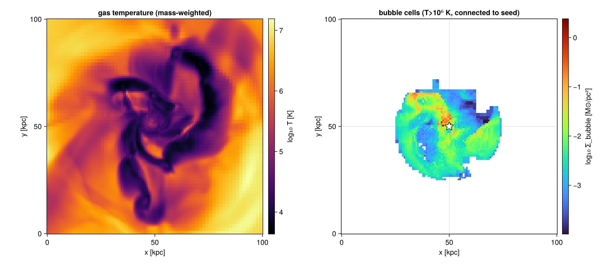

Hot Bubbles & Superbubbles
bubble follows a hot SN / superbubble outward from its stellar origin and measures its properties. It is a deliberately simple, deterministic alternative to machine-learning segmentation of superbubbles (e.g. Chen et al. 2026, who use 3-D transformer models): seed at the origin, select the hot gas, and take the connected component containing the seed — a flood-fill anchored at the origin, reusing the same friends-of-friends connectivity as clumpfind. The bubble is then a cell subset whose size, mass, energy, temperature, pressure, metal content and expansion velocity are measured with getvar.
Identify and measure a bubble
gas = gethydro(getinfo(output, path))
b = bubble(gas; seed=[50.0, 50.0, 50.0], # the origin (kpc, box coordinates)
T_min=1e6, range_unit=:kpc, # "bubble" = hot gas T > 10⁶ K …
max_radius=25.0) # … connected to the seed, within 25 kpc
b.r_eff # equivalent radius (3V/4π)^(1/3) [kpc]
b.mass # hot-gas mass [M⊙]
b.e_therm, b.e_kin, b.e_tot # energies [erg] → compare to N_SN · 10⁵¹ for energy retention
b.v_exp # mass-weighted expansion velocity from the seed [km/s]
b.T_mean, b.T_max
Defining the origin (seed)
- A position —
seed = [x, y, z]inrange_unit(box coordinates). This is also how you anchor on a single star/SN particle: pass its position. - A young-star cluster —
seed = :young_clusterwithparticles=runsclumpfindon the stars younger thanmax_ageand seeds at the most massive cluster's centre of mass (the "clustered SNR" driver).cluster_linking_lengthsets the cluster scale.
parts = getparticles(getinfo(output, path))
b = bubble(gas; seed=:young_cluster, particles=parts, max_age=20.0, T_min=1e6)Defining a "bubble" cell
A cell joins the bubble when it satisfies, in combination:
T > T_min(always — the hot phase),n < n_max(optional) — excludes dense swept-up shells, isolating the rarefied interior,P > P_ambient(optional,overpressure=true) — the over-pressured driving region;P_ambientdefaults to the median pressure withinmax_radiusof the seed.
Only the connected component containing the seed is kept, linked within linking_length (default ≈ two finest cells). The result carries a mask over the gas cells, so the bubble is directly visualizable and re-selectable:
projection(gas, :T, :K; mask=b.mask) # the bubble's cells only
getvar(gas, :rho, :nH; mask=b.mask)Following the bubble in time
bubbletimeseries re-identifies the bubble at each snapshot (re-finding a moving cluster seed when seed=:young_cluster) and assembles its growth and energy evolution:
bts = bubbletimeseries(o -> gethydro(getinfo(o, "/sim"), verbose=false), 100:10:300;
seed=:young_cluster,
particles_fn = o -> getparticles(getinfo(o, "/sim"), verbose=false),
max_age=20.0, T_min=1e6)
bts.t, bts.r_eff, bts.e_therm, bts.v_exp # radius / energy / expansion vs timePair it with fluxbudget at the bubble's r_eff to also measure the mass, momentum and energy flux it drives through its surface.
API
The functions bubble, bubbletimeseries and the result type BubbleResult are documented in the API reference. See also Clump Finding (the connectivity underneath) and Flux Budgets.